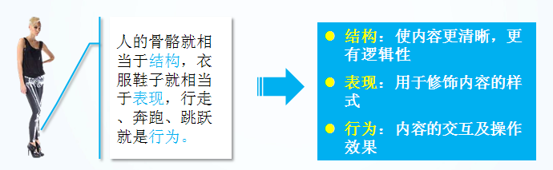

1.认识网页
网页主要由文字、图像和超链接等元素构成。当然，除了这些元素，网页中还可以包含音频、视频以及Flash等。

思考： 网页是如何形成的呢?

2.常见浏览器介绍
浏览器是网页运行的平台，常用的浏览器有IE、火狐（Firefox）、谷歌（Chrome）、Safari和Opera等。我们平时称为五大浏览器。

2.1 查看浏览器占有的市场份额（知晓）
查看网站： http://tongji.baidu.com/data/browser

2.2 浏览器内核（理解） ------面试用
浏览器内核又可以分成两部分：渲染引擎(layout engineer 或者 Rendering Engine)和 JS 引擎。
渲染引擎 它负责取得网页的内容（HTML、XML、图像等等）、整理讯息（例如加入 CSS 等），以及计算网页的显示方式，然后会输出至显示器或打印机。浏览器的内核的不同对于网页的语法解释会有不同，所以渲染的效果也不相同。
JS 引擎 则是解析 Javascript 语言，执行 javascript语言来实现网页的动态效果。
最开始渲染引擎和 JS 引擎并没有区分的很明确，后来 JS 引擎越来越独立，内核就倾向于只指渲染引擎。有一个网页标准计划小组制作了一个 ACID 来测试引擎的兼容性和性能。内核的种类很多，如加上没什么人使用的非商业的免费内核，可能会有10多种，但是常见的浏览器内核可以分这四种：Trident、Gecko、Blink、Webkit。
（1）Trident(IE内核)
国内很多的双核浏览器的其中一核便是 Trident，美其名曰 "兼容模式"。
代表： IE、傲游、世界之窗浏览器、Avant、腾讯TT、猎豹安全浏览器、360极速浏览器、百度浏览器等。
Window10 发布后，IE 将其内置浏览器命名为 Edge，Edge 最显著的特点就是新内核 EdgeHTML。
（2）Gecko(firefox)
Gecko(Firefox 内核)： Mozilla FireFox(火狐浏览器) 采用该内核，Gecko 的特点是代码完全公开，因此，其可开发程度很高，全世界的程序员都可以为其编写代码，增加功能。 可惜这几年已经没落了， 比如 打开速度慢、升级频繁、猪一样的队友flash、神一样的对手chrome。
（3） webkit(Safari)
Safari 是苹果公司开发的浏览器，所用浏览器内核的名称是大名鼎鼎的 WebKit。
现在很多人错误地把 webkit 叫做 chrome内核（即使 chrome内核已经是 blink 了），苹果感觉像被别人抢了媳妇，都哭晕再厕所里面了。
代表浏览器：傲游浏览器3、 Apple Safari (Win/Mac/iPhone/iPad)、Symbian手机浏览器、Android 默认浏览器，
（4） Chromium/Bink(chrome)
2016年 8月14日 王宝强正式微博发布消息宣布离婚。

2013 年 4月3日，谷歌正式宣布和webkit离婚。
在 Chromium 项目中研发 Blink 渲染引擎（即浏览器核心），内置于 Chrome 浏览器之中。Blink 其实是 WebKit 的分支。
大部分国产浏览器最新版都采用Blink内核。
（5） Presto(Opera)
Presto 是挪威产浏览器 opera 的 "前任" 内核，为何说是 "前任"，因为最新的 opera 浏览器早已将之抛弃从而投入到了谷歌怀抱了。

了解一点：
移动端的浏览器内核主要说的是系统内置浏览器的内核。
目前移动设备浏览器上常用的内核有 Webkit，Blink，Trident，Gecko 等，其中 iPhone 和 iPad 等苹果 iOS 平台主要是 WebKit，Android 4.4 之前的 Android 系统浏览器内核是 WebKit，Android4.4 系统浏览器切换到了Chromium，内核是 Webkit 的分支 Blink，Windows Phone 8 系统浏览器内核是 Trident。
3.Web标准（重点）
通过以上浏览器的内核不同，我们知道他们工作原理、解析肯定不同，显示就会有差别。
问： 哪个语言再全国基本都可以听得懂？

3.1 Web 标准的好处
1、让Web的发展前景更广阔
2、内容能被更广泛的设备访问
3、更容易被搜寻引擎搜索
4、降低网站流量费用
5、使网站更易于维护
6、提高页面浏览速度
3.2 Web 标准构成
Web标准不是某一个标准，而是由W3C和其他标准化组织制定的一系列标准的集合。主要包括结构（Structure）、表现（Presentation）和行为（Behavior）三个方面。
结构标准：结构用于对网页元素进行整理和分类，主要包括XML和XHTML两个部分。
样式标准：表现用于设置网页元素的版式、颜色、大小等外观样式，主要指的是CSS。
行为标准：行为是指网页模型的定义及交互的编写，主要包括DOM和ECMAScript两个部分。
理想状态我们的源码： .html .css .js
专业的人，写专业的代码
直观感受：

总结WEB标准：
结构标准：  决定你是否有个好天然身体
决定你是否有个好天然身体
样式标准：  决定你是否打扮的美丽外观
决定你是否打扮的美丽外观
行为标准： 决定你是否有吸引人的行为
4.HTML 初识
一般先学习html+css， 这里我们先定一个小目标，先学HTML,后学习CSS。
HTML（英文Hyper Text Markup Language的缩写）中文译为“超文本标签语言”，主要是通过HTML标签对网页中的文本、图片、声音等内容进行描述。
<strong> 我是加粗的字体 </strong>
注意： 体会 文本 标签 语言 几个词语
4.1 HTML骨架格式
日常生活的书信，我们要遵循共同的约定。

同理：HTML 有自己的语言语法骨架格式：
<html>
<head>
<title></title>
</head>
<body>
</body>
</html>
- 新建一个demo 的 TXT 文件。
- 里面写入刚才的html 骨架。
- 把后缀名改为 .html。
- 右击--谷歌浏览器打开。
1 html标签： 作用所有html中标签的一个根节点。
2 head标签： 作用：用于存放： title,meta,base,style,script,link 注意在head标签中我们必须要设置的标签是title
3.title标签： 作用：让页面拥有一个属于自己的标题。
4.body标签： 作用：页面在的主体部分，用于存放所有的html标签： p,h,a,b,u,i,s,em,del,ins,strong,img
为了便于记忆，我们请出刚才要辞职回家养猪的二师兄来帮忙！

4.2 HTML标签分类
在HTML页面中，带有“< >”符号的元素被称为HTML标签，如上面提到的 <html>、<head>、<body>都是HTML标签。所谓标签就是放在“< >” 标签符中表示某个功能的编码命令，也称为HTML标签或 HTML元素
双标签
<标签名> 内容 </标签名>
该语法中“<标签名>”表示该标签的作用开始，一般称为“开始标签（start tag）”，“</标签名>” 表示该标签的作用结束，一般称为“结束标签（end tag）”。和开始标签相比，结束标签只是在前面加了一个关闭符“/”。
比如 <body>我是文字 </body>
单标签
<标签名 />
单标签也称空标签，是指用一个标签符号即可完整地描述某个功能的标签。
比如 <br />
4.3 HTML标签关系
标签的相互关系就分为两种：
1.嵌套关系
<head> <title> </title> </head>

2.并列关系
<head></head>
<body></body>

测试题：
请问下列哪个标签是错误的？
A <head></head><body></body>
B <strong><div></div></strong>
C <head><title></head></title>
D <body><div></div></body>
倡议： 如果两个标签之间的关系是嵌套关系，子元素最好缩进一个tab键的身位。如果是并列关系，最好上下对齐。
5.开发工具
这些工具你认识几个？

普通青年 Dreamweaver
文艺青年 sublime
高手和傻子 用记事本
其实。。。。
6.文档类型<!DOCTYPE>
<!DOCTYPE html PUBLIC "-//W3C//DTD XHTML 1.0 Transitional//EN" "http://www.w3.org/TR/xhtml1/DTD/xhtml1-transitional.dtd">
<!DOCTYPE> 标签位于文档的最前面，用于向浏览器说明当前文档使用哪种 HTML 或 XHTML 标准规范，必需在开头处使用<!DOCTYPE>标签为所有的XHTML文档指定XHTML版本和类型，只有这样浏览器才能将该网页作为有效的XHTML文档，并按指定的文档类型进行解析。
DTD 文档类型定义(Document Type Definition)
1.目前最新的HTML版本是HTML5，但是各个浏览器对其支持不统一，所以如今大多数的网站还未完全采用。
2.我们学习的不是HTML 而是 HTML的下一个版本 XHTML。
6.1 XHTML 是什么？
XHTML 指扩展超文本标签语言（EXtensible HyperText Markup Language）
HTML 松散，浏览器支持不好， 包括移动端之类的， 这时候XHTML 要求严谨一些 功能更强大 来实现过渡效果。。。
白话文总结： HTML 语法太松散了，造成类似方言 不同地方听不懂。 xhtml 就是严谨一些，类似普通话为了保持一致。
XHTML 有几点要注意：
1.<!DOCTYPE> 后面的第一个标签必须是<html> ， < /html>必须是最后一个标签
2.所有的标签都必须要有一个相应的结束标签
3.标准的XHTML标签应该使用小写
4.所有属性值非空，必须双引号
注解： 以后我们学的都是XHTML了。
7.字符集
utf-8是目前最常用的字符集编码方式，常用的字符集编码方式还有gbk和gb2312。
gb2312 简单中文 包括6763个汉字
BIG5 繁体中文 港澳台等用
GBK包含全部中文字符 是GB2312的扩展，加入对繁体字的支持，兼容GB2312
UTF-8则包含全世界所有国家需要用到的字符
记住一点，以后我们统统使用UTF-8 字符集
8. 学习HTML 常用标签（今天重点）
首先 HTML和CSS是两种完全不同的语言，我们学的是结构，就只写html标签，认识标签就可以了。 不会再给结构标签指定样式了。
HTML标签有很多，这里我们学习最为常用的，后面有些较少用的，我们可以查下手册就可以了。
8.1 标题标签 （熟记）
为了使网页更具有语义化，我们经常会在页面中用到标题标签，HTML提供了6个等级的标题，即
<h1>、<h2>、<h3>、<h4>、<h5>和<h6>
从<h1>到<h6>重要性递减。其基本语法格式如下：
<hn> 标题文本 </hn>
注意： h1 标签因为重要，尽量少用，不要动不动就向你扔了一个h1。 一般h1 都是给logo使用。

8.2 段落标签 （熟记）
在网页中要把文字有条理地显示出来，离不开段落标签，就如同我们平常写文章一样，整个网页也可以分为若干个段落，而段落的标签就是
<p> 文本内容 </p>
是HTML文档中最常见的标签，默认情况下，文本在一个段落中会根据浏览器窗口的大小自动换行。
8.3 水平线标签（认识）
在网页中常常看到一些水平线将段落与段落之间隔开，使得文档结构清晰，层次分明。这些水平线可以通过插入图片实现，也可以简单地通过标签来完成，
就是创建横跨网页水平线的标签。其基本语法格式如下：
<hr />是单标签
在网页中显示默认样式的水平线。

8.4 换行标签
在HTML中，一个段落中的文字会从左到右依次排列，直到浏览器窗口的右端，然后自动换行。如果希望某段文本强制换行显示，就需要使用换行标签
<br />
这时如果还像在word中直接敲回车键换行就不起作用了。
8.5 文本格式化标签
在网页中，有时需要为文字设置粗体、斜体或下划线效果，这时就需要用到HTML中的文本格式化标签，使文字以特殊的方式显示。

8.6 标签属性
 属性就是特性 比如 手机的颜色 手机的尺寸 ，总结就是手机的。。
属性就是特性 比如 手机的颜色 手机的尺寸 ，总结就是手机的。。
使用HTML制作网页时，如果想让HTML标签提供更多的信息，可以使用HTML标签的属性加以设置。其基本语法格式如下：
<标签名 属性1="属性值1" 属性2="属性值2" …> 内容 </标签名>
在上面的语法中：
- 标签可以拥有多个属性，必须写在开始标签中，位于标签名后面。(你是我的)
- 属性之间不分先后顺序，标签名与属性、属性与属性之间均以空格分开。
- 任何标签的属性都有默认值，省略该属性则取默认值。
采取 键值对 的格式 key="value" 的格式
比如:
<hr width="400" />
属性 是 宽度
值 是 400
提倡： 尽量不使用 样式属性。 
8.7 图像标签 （重要）
（重要）
HTML网页中任何元素的实现都要依靠HTML标签，要想在网页中显示图像就需要使用图像标签，接下来将详细介绍图像标签以及和他相关的属性。其基本语法格式如下：
该语法中src属性用于指定图像文件的路径和文件名，他是img标签的必需属性。
<img src="图像URL" />

8.8 链接标签
在HTML中创建超链接非常简单，只需用标签环绕需要被链接的对象即可，其基本语法格式如下：
<a href="跳转目标" target="目标窗口的弹出方式">文本或图像</a>
href：用于指定链接目标的url地址，当为标签应用href属性时，它就具有了超链接的功能。
target：用于指定链接页面的打开方式，其取值有_self和_blank两种，其中_self为默认值，_blank为在新窗口中打开方式。
注意：
1.外部链接 需要添加 http:// www.baidu.com
2.内部链接 直接链接内部页面名称即可 比如 < a href="index.html"> 首页 </a >
3. 如果当时没有确定链接目标时，通常将链接标签的href属性值定义为“#”(即href="#")，表示该链接暂时为一个空链接。
4.不仅可以创建文本超链接，在网页中各种网页元素，如图像、表格、音频、视频等都可以添加超链接。
8.8.1锚点定位 （难点）
通过创建锚点链接，用户能够快速定位到目标内容。 创建锚点链接分为两步：
1.使用“<a href=”#id名“>链接文本</a>”创建链接文本。
2.使用相应的id名标注跳转目标的位置。
<a href="#life">3 个人生活</a> 这是点击的地方
<h3 id="life">个人生活</h3> 这是去往的地方同时还可以做不同页面的锚点定位：前面加上路径就可以了
<a href="index.html#life">3 个人生活</a> 这是点击的地方
<h3 id="life">个人生活</h3> 这是去往的地方8.8.2 base 和 nofollow (拓展)
base 可以设置整体链接的打开状态

nofollow 设置不抓取链接
rel = "nofollow"
8.9 特殊字符标签 （理解）

8.10 注释标签
在HTML中还有一种特殊的标签——注释标签。如果需要在HTML文档中添加一些便于阅读和理解但又不需要显示在页面中的注释文字，就需要使用注释标签。其基本语法格式如下：
<!-- 注释语句 -->
注释内容不会显示在浏览器窗口中，但是作为HTML文档内容的一部分，也会被下载到用户的计算机上，查看源代码时就可以看到。
注释重要性：

9. 路径（重点、难点）

实际工作中，通常新建一个文件夹专门用于存放图像文件，这时再插入图像，就需要采用“路径”的方式来指定图像文件的位置。
路径可以分为： 相对路径和绝对路径
9.1 相对路径
图像文件和html文件位于同一文件夹：只需输入图像文件的名称即可，如<img src="logo.gif" />。
图像文件位于html文件的下一级文件夹：输入文件夹名和文件名，之间用“/”隔开，如<img src="img/img01/logo.gif" />。
图像文件位于html文件的上一级文件夹：在文件名之前加入“../” ，如果是上两级，则需要使用 “../ ../”，以此类推，如<img src="../logo.gif" />。
9.2 绝对路径
绝对路径
“D:\web\img\logo.gif”，或完整的网络地址，例如“http://www.itcast.cn/images/logo.gif”。
{kind=link}
10 总结
学HTML 之前 觉得 很神秘

等你学完之后忽然发现

总结今天的思路贯穿线：